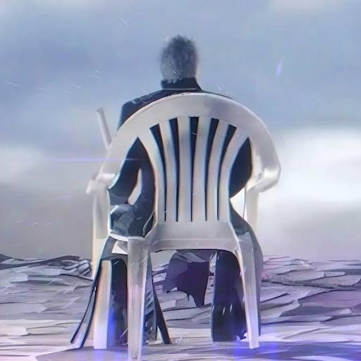
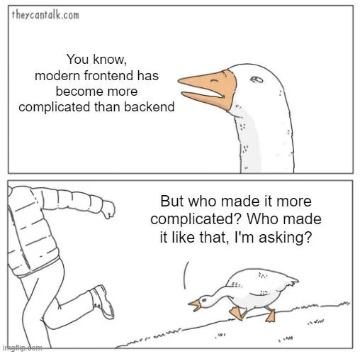
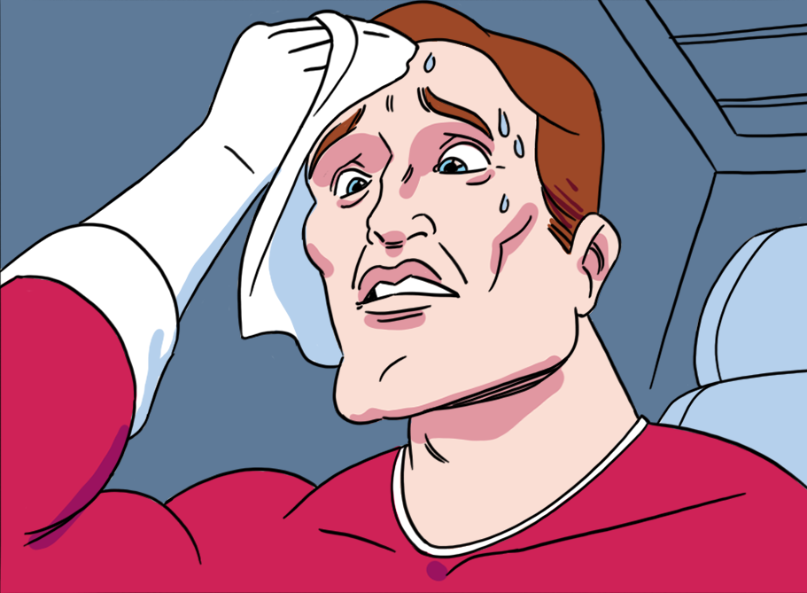

Surviving Sophomore Year
25-09-2025
Looking back at sophomore year, I can honestly say that it was a rollercoaster ride of events that pushed me well beyond my comfort level and eventually to the determination of what would become my academic path. From trying out an unexpected salesman job to deep-diving into frontend development frameworks and getting submerged in math projects, this year taught me much about myself and what I want to do.
First Semester: The Unlikely Salesman
Anyone who study in my program knows the beauty of first-semester subjects: they tend to go easy on you, which means I have more spare time. But instead of using it to binge Netflix or gatekeeping Valorant gold lobby, I decided to do something completely out of character for me—I got a part-time job as a salesman.
I still don't know what possessed me to choose sales when I'm such an introvert. Maybe I needed the money and the opportunity came just right in time. Yeah, I was short on money, so there I was, trying to convince people to buy products while having no idea what I'm doing.
The job itself was decent, I'll give it that, my coworkers were absolutely amazing. They were friendly, patient with my clumsiness, and incredibly helpful in showing me the ropes. The problem wasn't the people or even the work environment; it was the commission system that killed my motivation.

Instead of getting a percentage of sales (which would make total sense, right?), we got a fixed rate of about $2-4 per item sold. No matter if you sold a $300 item or a $1000 item, the commission was the same. But what really broke the camel's back was having to advertise on Facebook. As someone who prefer to be a ghost on social media rather than actively interact with it, this was pure torture for me.
After five months of forcing myself through uncomfortable sales pitches and Facebook posts, I finally called it quits. It wasn't a bad experience overall, but it definitely confirmed that sales isn't my calling.
On a brighter note, this semester was also when I participated in my first game jam, which I wrote about in my last post. That was a whole different kind of challenge and fun.
Second Semester: The Calm Before the Storm
Honestly, not much of anything was going on in second semester. It was one of those periods where things just happened. I attended classes, did some assignments, go to work (the semester start a month before i quit the job), and spent too much time playing games or sleeping. Little did i know that a storm was approaching.

Third Semester: Welcome to Hell
It comes and says: "お前はもう死んでいる", then proceeds to destroy us. That's the characteristic of the third semester, it's like: "Okay, I've been nice long enough. Now go to hell!! Hahahahahahahaa...". I know this from my experience last year, and I made it my mission to lock tf in. Grabbing every bonus point available and no more skipping classes. Even my friends were surprised to see me got in class so early.
This term also had me dive into frontend development for the first time correctly. While I've played around with HTML, CSS, and JavaScript before, this was when I finally explored the frameworks that actually power modern web development: React, Next.js, Tailwind, TypeScript, etc—all the things that used to intimidate me now made sense as I worked on a fairly well big web project.

But here's where things got really intense: my "Applied Maths and Statistics for IT" course. Every week brought new homework assignments (which were manageable) and projects (which weren't). I found myself implementing matrix operations and eigenvector algorithms, which were like OK?, but at later weeks I have to predict data using "homemade" regression algorithm. I remember looking at Ridge and Lasso regression formula and be like "WTF is this?". After that was hours of vibe coding to optimize the algorithm and reason my way to the best combinations of features for minimum errors. My brain broke, honestly.
The real nightmare was finals week. Picture this: I'm trying to complete my final math project (the one where I have to find best combinations), finishing up my frontend web project that had grown into a monster of components and API calls, and somehow find time to study for actual finals. Even on the demo day, we were still coding the web features that morning. I'm pretty sure I survived on coffee and sheer determination alone.
The Big Decision: Choosing My Specialty
One of the unique things about my IT program that aren't like other universities is that we spend the first two years on general subjects before choosing our specialty based on our GPA. It's both terrifying and exciting—your grades literally determine what you will be learning in the final 2 years and what could be possibly your future job.
The options were diverse: Software Engineering, Cybersecurity, Data Science, Computer Vision, AI, and more. Each one represented a different future, a different set of challenges and opportunities.
Fortunately, my academic performance throughout the first two years wasn't half bad, it could have been better if I pay more attention, really. Despite a lot of slip ups, I managed to get into software engineering—which, let's be honest, was always going to be my first choice. Although before that I did have my interest in Computer Vision and Cybersecurity, but after that encounter with those math projects and learning how to build a network structure wasn't my thing so I chose SE. After all, coding is what I'm actually good at, and it's what brings me genuine satisfaction when seeing the app that I built... Works.

Looking Forward
As I wrap up sophomore year and prepare for what's ahead, I'm feeling genuinely excited about the direction my career is taking. Getting into software engineering was just step one—I'm now planning on specializing in DevOps during my third year and beyond.
I'm planning to dive deep into the DevOps ecosystem—learning about Docker, Kubernetes, Jenkins, AWS, and all the other techs that make modern software deployment faster and safer. The field seems to be growing rapidly, with companies increasingly recognizing the value of DevOps who can bridge the gap between development and operations.
Of course, I'm keeping my options open. If DevOps doesn't pan out exactly as I would like, I can always rely on my strong software development background. Pure development work—whether frontend, backend, or full-stack—is always going to be in demand. Having that as a fall-back makes me feel secure enough to attempt the more specialized DevOps path without worrying too much about future job opportunities.
Here's to junior year—may it bring clarity, growth, and the confidence that comes from knowing you're on the right path.